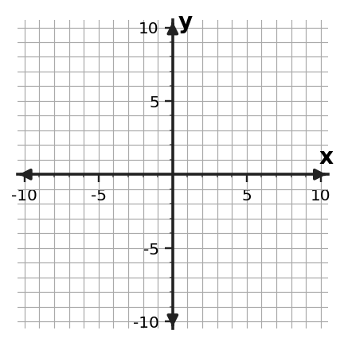

Algebra 1 · Unit 2 · Section 2.2 · Investigation
Graphing from Clues
Graphing Linear Functions
Learning Target: Students will graph linear functions and interpret key features.
Directions
- Work with a partner unless your teacher assigns a different grouping.
- Show the evidence you use, not only the final answer.
- When a representation changes, keep the meaning of the quantities attached to your work.
- Revise an answer if later evidence shows that your first claim was incomplete.
Part 1 · Graph from Two Clues
For each rule, identify the slope and y-intercept, then sketch the line on the provided coordinate plane.
| Equation | Slope | y-intercept |
|---|---|---|
| $y=2x-3$ | ||
| $y=-\frac{1}{2}x+4$ | ||
| $y=5$ |

Part 2 · Context to Graph
A savings account begins with \$20 and grows by \$6 each week. Label axes, mark the starting value, and graph at least four meaningful points.

Explain what the slope and intercept mean in this context.
Part 3 · Graph Check
A student graphs $y=-3x+2$ but starts at $(2,0)$. Identify the mistake and describe the correct first two graphing moves.
Synthesis
Explain why slope-intercept form can be treated as a set of graphing instructions.